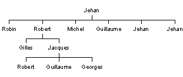
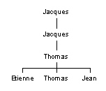
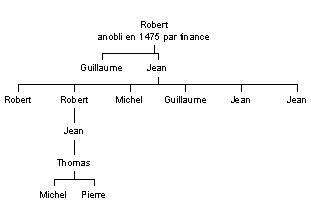
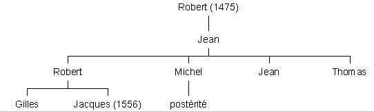

RECHERCHES DE NOBLESSE RECHERCHES DE NOBLESSE
RECHERCHES DE NOBLESSE RECHERCHES DE NOBLESSE
RECHERCHE DE DU BOSC, 1523
Référence : Recherche des élus de la
Vicomté de Bayeux faite en 1523 par Jacques du Bosc
Provenance : Archives Départementales de
la Manche
Thiboult : Mre Guillaume THIBOULT, prêtre, oncle et gardien des enfants sous âgés de Robert THIBOULT, en son vivant Escr, sgr du Mesnil Gonfroy produisant tant pour lesdits sous âgés que pour Robert THIBOULT, escr, ainsi que pour Guillaume, Jean et Thomas THIBOULT, Escr, co-héritiers du susdit Robert, sr de Mesnil Gonfroy, lesquels étaient descendus de Robert THIBOULT anobli aux Francs fiefs, par charte du mois de Mai 1477. Duquel sortit Jean THIBOULT escr duquel sortit ledit Robert, père de Gilles et de Jacques THIBOULT, produisants et sous âgés duquel Robert dernier nommé le susdit Me Guillaume prêtre était frère (nota que la généalogie est mal expliquée dans l'inventaire).
Référence : Recherches de 1540, Bayeux
Provenance : Archives Départementales du Calvados, via Patrick Van Nieuwkerke
Gilles Thiboult, soy disant sieur du
Mesnil Gonffroy a produict une chartre de anoblissement faict par le
Roy Loys à Robert Thiboult en l'an mil IIIIc LXXVI
vériffiées et expédiés en la chambre des
comptes en l'an mil IIIIc LXXVII, moyennant XXX escuz payez au
thrésor selon la quittance. Et avecques ce produict deux
attaches et expéditions donnez l'une par Hervieu Collet,
lieutenant des Elleuz à Bayeux en l'an mil IIIIc LXXVII soubz le
nom dudict Robert, et l'autre de Ollivier Le Sope (?) de l'an [mil]
cinq centz six soubz le nom de Mre Guillaume Thiboult, pbre estably
pour Robert, demeurant à Sainct Jean des Baisantz
adjourné pour apporter ses chartres sy aulcunes en avoit pour
son exemption et aprez avoir exibé ladicte chartre par ledict
Mre Guillaume delliberer à la collation du Roy icelluy Thiboult
avoit esté envoyé et entretenu en la jouissance dudict
privillege de noblesse sans estre desclaré à ladicte
lettre ou attache la généalogie ou derivation dudict
Thiboult.
Et pour ce que la généalogie baillée et produicte
par ledict Gilles et Mre Michel Thiboult, prestre, son oncle, est
contenu et faict mention qu'il a plusieurs frères et oncles,
sans les nommer, est requis clarifier et nommer les personnes qui
vouldroient user dudict privillège d'anoblissement et bailler
leur généalogie et la justiffier et veriffier et par
semblablement ledict Gilles qu'il soit dérivé et descendu
dudict Robert anobli pour ce qu'il y a plusieurs personnes portantz
ledict surnom de Thiboult qui ne sont sortis ne descendeuz dudict
anobli et lesquels ne sont du lignage, et que soubz buorre(?) dudict
anoblissement et lignage et pourroit usurper ledict privillège,
et pour à ce esviter est requis avoir certitude de ceux qui sont
derivez et descenduz dudict Robert anobli.
Référence : Recherches de la Noblesse de
Normandie par Stephano-Louis-Marye de Merval, 1 Mi 395
Provenance : Archives Départementales de la Manche
Thiboult : Jean Thibout, sr du Poussy fils Guill. demeurant à Cinq autels serg. St Sylvin veu ses tiltres et Montfaut jouira
Thiboult : Georges Thiboult fils Jacques demeurant à St Jean des Bézans sergeanterie de Thorigny eslection de Bayeux
Robert et Guill. ses frères tous
venus de Robert annobly par chartre de l'an 1475, registrée
aux comptes l'an 1477, le 17 octobre et aux Aydes le 10 juin 1556
m'ont vallablement justifié que Jacques leur père fut
fils Robin leur ayeul.
Référence : Fonds Y16 Martainville,
élection de Bayeux, folio 127
Provenance : Benoît Morel, d'après Christophe
Poulain

Obtient arrêt de maintenue le 10-06-1556 (ou 1576 ou 1596)
RECHERCHE DE CHAMILLART (1666)
Référence : Recherche de la Noblesse faite par
ordre du Roi (Louis XIV) en 1666 et années suivantes ; Guy
Chamillart ; édition de 1887
Provenance : Archives Départementales de la Manche
Thiboult (2ème partie)
Portent : d'azur, à 3 grenades d'or, 2 et 1

Etienne, Thomas et Jean Thiboult Ers
frères R.R., 25, 23 et 22 ans de la par. de Sainte Croix de
Saint Lô, élection de Carentan
Jacques x Dlle Anne Philippes
Thiboult (3ème partie) p.731-32
Anobli en 1475 portent : d'azur à 3 grenades d'or

Michel Thiboult Er, sr de Mareschaux 50
ans, par. de Litteau
Pierre Er, sr de la Rillerie, 43 ans, par. de Bérigny, serg.
de Thorigny, élection de Bayeux
Michel x Dlle Marguerite Hébert en 1635
Pierre x Dlle Marie Radulph en 1658
NOTES POUR LA RECHERCHE DE CHAMILLART
Référence : Notes et documents pour servir
à l'histoire de la Recherche de Chamillart par un Membre du
Conseil héraldique de France (= G. du Boscq de Beaumont) ;
Caen, 1890
Provenance : Archives Départementales de la Manche
Thiboult : (=p.732-32) Cette famille devrait figurer au nombre de celles qui furent associées à la compagnie de la Nouvelle France ; on lit en effet la note suivante dans une ancienne copie de la Recherche conservée dans la bibliothèque du château de Vaussieux :
" Thiboult : anoblis par l'édit du Canada - Les dits srs Thiboult ont justifié être descendus de Robert, anobli par chartes qu'ils ont représentées, expédiées en 1475, registrées en l'élection de Bayeux en 1477 et en la Cour des Aydes le 10 juin 1556, mais Thomas leur père, ayant égaré ladite charte, et ayant été inquiété, obtint celle de 1629."
Référence : BN Fonds Français n° 32
314 Cabinet des Titres 488, élection de Bayeux, p.380
(Manuscrit)
Provenance : Benoît Morel d'après Christophe
Poulain
Maintenue le 10-06-1556 à la Cour des Aydes
Joachim et Jacques Thibout déclarés roturiers le
10-04-1602
